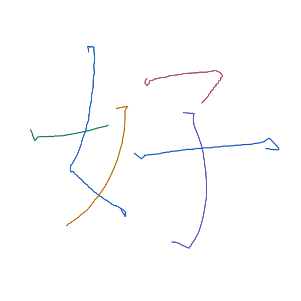

字形参考提供位置、笔顺和布局；下图6笔路径由所选笔画模板适配生成。当前结果是教学写法几何候选。
打开整字 XY，查看或局部修正 → 下载合成配方 下载整字 XY

| 笔顺／写法 | 来源与模板版本 | 整图轮廓内行程 1 px 容差 |
|---|---|---|
| 1. 撇点 | piedian / standarde729c5bee4ed7a0969b5f4a980295c6629c417a39038c5fd0ee729f3df3b71c3 | 100.0% |
| 2. 斜撇 | pie / slant2835b97b6b7766e0fb236ba98a2ecd11f7c8b363782bf74d285916cdc3730ad3 | 100.0% |
| 3. 提 | ti / standardd3c29fa26665e4d5f9afbabce199dc6e5f94086a3f7a4e001a9a9488679ca892 | 100.0% 有轮廓外点 |
| 4. 横撇 | hengpie / short_heng_curved_pie9335532bf5f9ee6f8b0bc59b1290bad234cda3146a02a25e852cc8938962a08b | 100.0% |
| 5. 竖钩 | shugou / standardd7c1eaab1d33c8bc282e4a05a41980c105279b89cd3ad3b4a41d85a3bb9c09d1 | 100.0% |
| 6. 长横 | heng / longa15ac6cf8b548ebbff250b5a9eedabb509cdb451c943c867b48b74321c3b5cec | 97.7% 有轮廓外点 |
轮廓比例按路径弧长均匀采样计算，使用整图墨迹，不区分交叉位置属于哪一笔。它只检查 XY 与布局参考的叠加，不能评价书法质量或预测墨迹外形。
配方可调整每笔的主体长度、分段长度、宽度尺度、旋转和位移；尺寸调整后重新运行 compose 生成新版本。合成包保存布局与模板快照，可以离线重建。
布局原图仅用于定位和对照。模板尚未对应真实时间、Z 高度或磁响应。